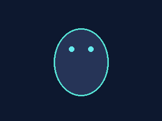

01 · Try it
A speaking character in one tap

No uploads or setup. Try a two-second spoken demo with a plain synthetic character and generated mouth graphics.
First use loads about 40 MB of hash-verified speech data and media libraries from this site. No third-party CDN is contacted. Initial analysis may take longer.
02 · Make your own
Use your own source and approved mouth art
Mouth placement
No uploaded file is sent to this website or its CDN. Your browser reads each file directly. The default Python/FFmpeg project is unaffected.
03 · Inspect & export
Your video
Ready. Nothing is running.
A generated file is a test output, not a certified final render.
Detailed technical receipt
No render yet.